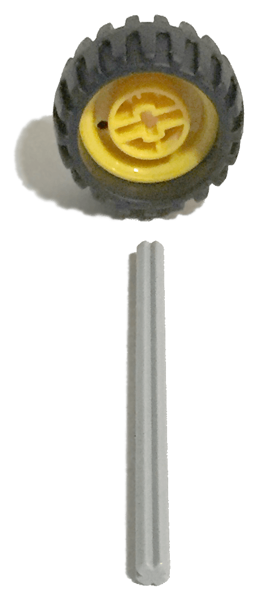
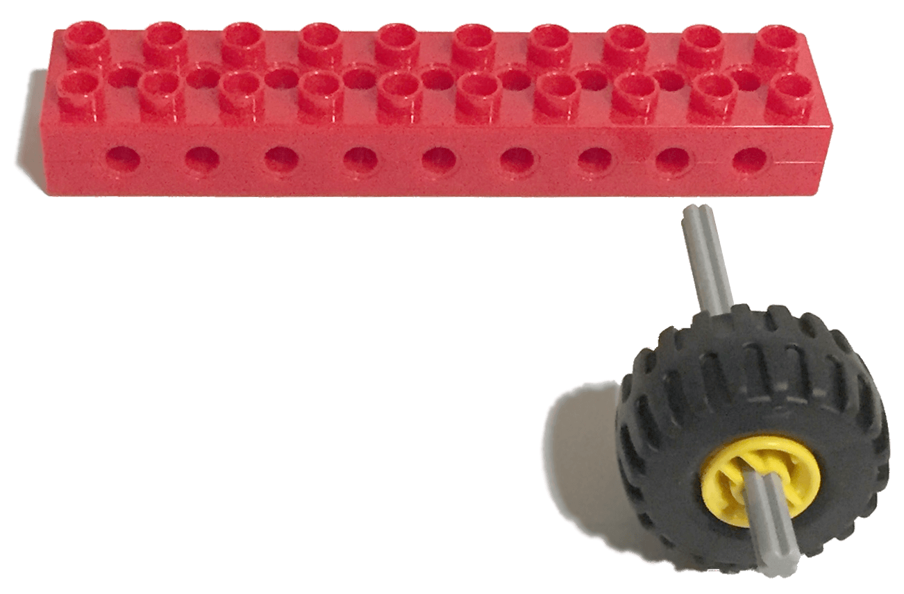
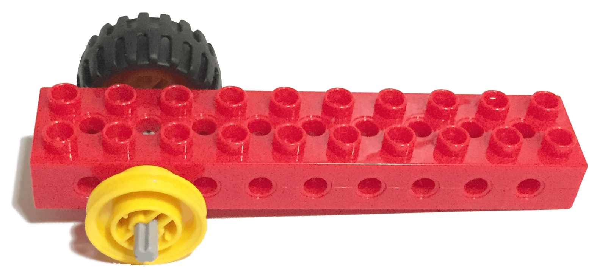
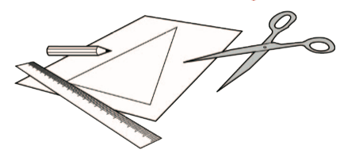

Los capitanes Sam y Sara son peligrosos piratas camino de la isla del tesoro. Van a enterrar sus preciados
tesoros de plata y oro.
Deben darse prisa para que nadie los vea, ya que no quieren que nadie les robe su botín.
Pero los capitanes Sam y Sara, y su infame balsa no van muy rápido. Sam sopla la vela para hacer que la balsa
navegue más rápido. Sara dice que necesitarán darse prisa para que nadie los vea.

¿Puedes ayudar a Sam y Sara a hacer que su balsa navegue más rápido? ¡Veamos cómo se hace!
Construye la balsa utilizando las instrucciones. Picha sobre la imajen para acceder a ellas.
¿Te atreves a ponerle ruedas para ver como funciona? Para ello, vamos a seguir los siguientes pasos:
• Montaremos tres ruedas.

• Le añadiremos un eje a cada una.


• Insertaremos una de las ruedas con el eje en un ladrillo rojo con agujeros laterales de 10x2 y lo sujetamos con una pieza amarilla por el otro lado del bloque.


• Montamos otra vez la misma pieza pero de forma simétrica.
• A la rueda que nos sobra, le montamos una pieza amarilla por cada lado del eje.
• Esa tercera rueda la montaremos entre las dos piezas anteriores.
• El montaje completo lo colocaremos debajo de la balsa para simular que navega.
¿Rápido o más Rápido?
Sopla o utiliza algún objeto como la tapa de la caja, como un "fabricante de vientos". Averigua qué vela
hace que tu balsa navegue más rápido.
Predice primero cuál de las balsas navegará rápido y cuál navegará más rápido.
A continuación, prueba la balsa con la vela pequeña y después, con la vela grande.
La vela grande tiene más superficie para capturar la fuerza del viento. El viento empuja la vela, haciendo
que la balsa se desplace hacia delante.
Pide a los niños que reflexionen sobre sus pruebas preguntándoles cosas como:
• ¿Que has predicho que ocurriría y por qué?
• Describe lo que ha ocurrido.
• ¿Cómo te aseguraste de que las pruebas fueran imparciales?
¿Has soplado o hecho viento a la misma velocidad? ¿Has soplado o hecho viento desde la misma posición?
• Describe cómo funciona el modelo.
• Si pudieras mejorar tres cosas en tu balsa, ¿cuáles serían y por qué?
¿Puedes diseñar y fabricar una vela nueva?
Utiliza tu imaginación para diseñar tu propia vela para la balsa.
Diseña velas de diferentes formas y prueba cómo funcionan. Considera qué materiales serían los mejores. Crea
entonces unas velas bonitas y coloridas.

¿Eres capaz de construir tu propia balsa?
Puedes construir una balsa que transporte montones de plata y oro.